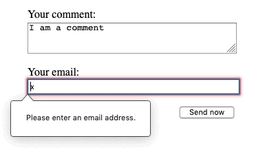
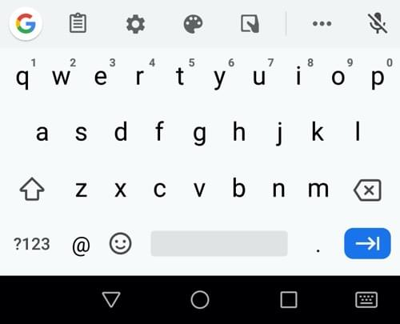

The HTML5 input types
In the previous article we looked at the <input> element, covering the original values of the type attribute available since the early days of HTML. Now we'll look in detail at the functionality of some input types that were added later.
| Prerequisites: | A basic understanding of HTML. |
|---|---|
| Objective: | To understand the newer input type values available to create native form controls, and how to implement them using HTML. |
Because HTML form control appearance may be quite different from a designer's specifications, web developers sometimes build their own custom form controls. We cover this in an advanced tutorial: How to build custom form widgets.
Email address field
This type of field is set using the value email for the type attribute:
<input type="email" id="email" name="email" />
When this type is used, the value must be an email address to be valid. Any other content causes the browser to display an error when the form is submitted. You can see this in action in the screenshot below.

You can use the multiple attribute in combination with the email input type to allow several comma-separated email addresses to be entered in the same input:
<input type="email" id="email" name="email" multiple />
On some devices — notably, touch devices with dynamic keyboards like smartphones — a different virtual keypad might be presented that is more suitable for entering email addresses, including the @ key:

Note: You can find examples of the basic text input types at basic input examples (see the source code also).
This is another good reason for using these newer input types, improving the user experience for users of these devices.
Client-side validation
As you can see above, email — along with other newer input types — provides built-in client-side error validation, performed by the browser before the data gets sent to the server. It is a helpful aid to guide users to fill out a form accurately, and it can save time: it is useful to know that your data is not correct immediately, rather than having to wait for a round trip to the server.
But it should not be considered an exhaustive security measure! Your apps should always perform security checks on any form-submitted data on the server-side as well as the client-side, because client-side validation is too easy to turn off, so malicious users can still easily send bad data through to your server. Read Website security for an idea of what could happen; implementing server-side validation is somewhat beyond the scope of this module, but you should bear it in mind.
Note that a@b is a valid email address according to the default provided constraints. This is because the email input type allows intranet email addresses by default. To implement different validation behavior, you can use the pattern attribute. You can also customize the error messages. We'll talk about how to use these features in the Client-side form validation article later on.
Note:
If the data entered is not an email address, the :invalid pseudo-class will match, and the validityState.typeMismatch property will return true.
Search field
Search fields are intended to be used to create search boxes on pages and apps. This type of field is set by using the value search for the type attribute:
<input type="search" id="search" name="search" />
The main difference between a text field and a search field is how the browser styles its appearance. In some browsers, search fields are rendered with rounded corners. In some browsers, an "Ⓧ" clear icon is displayed, which clears the field of any value when clicked. This clear icon only appears if the field has a value, and, apart from Safari, it is only displayed when the field is focused. Additionally, on devices with dynamic keyboards, the keyboard's enter key may read "search", or display a magnifying glass icon.
Another worth-noting feature is that the values of a search field can be automatically saved and re-used to offer auto-completion across multiple pages of the same website; this tends to happen automatically in most modern browsers.
Phone number field
A special field for filling in phone numbers can be created using tel as the value of the type attribute:
<input type="tel" id="tel" name="tel" />
When accessed via a touch device with a dynamic keyboard, most devices will display a numeric keypad when type="tel" is encountered, meaning this type is useful whenever a numeric keypad is useful, and doesn't just have to be used for telephone numbers.
-
Due to the wide variety of phone number formats around the world, this type of field does not enforce any constraints on the value entered by a user (this means it may include letters, etc.).
As we mentioned earlier, the pattern attribute can be used to enforce constraints, which you'll learn about in Client-side form validation.
URL field
A special type of field for entering URLs can be created using the value url for the type attribute:
<input type="url" id="url" name="url" />
It adds special validation constraints to the field. The browser will report an error if no protocol (such as http:) is entered, or if the URL is otherwise malformed. On devices with dynamic keyboards, the default keyboard will often display some or all of the colon, period, and forward slash as default keys.
Note: Just because the URL is well-formed doesn't necessarily mean that it refers to a location that actually exists!
Numeric field
Controls for entering numbers can be created with an <input> type of number. This control looks like a text field but allows only floating-point numbers, and usually provides buttons in the form of a spinner to increase and decrease the value of the control. On devices with dynamic keyboards, the numeric keyboard is generally displayed.
<input type="number" id="number" name="number" />
With the number input type, you can constrain the minimum and maximum values allowed by setting the min and max attributes.
You can also use the step attribute to set the increment increase and decrease caused by pressing the spinner buttons. By default, the number input type only validates if the number is an integer, as the step attribute defaults to 1. To allow float numbers, specify step="any" or a specific value, like step="0.01" to restrict the floating point. If omitted, as the step value defaults to 1, only whole numbers are valid.
Let's look at some examples:
This example creates a number control whose valid value is restricted to an odd value between 1 and 10. The increase and decrease buttons change the value by 2, starting with the min value.
<input type="number" name="age" id="age" min="1" max="10" step="2" />
This example creates a number control whose value is restricted to any value between 0 and 1 inclusive, and whose increase and decrease buttons change its value by 0.01.
<input type="number" name="change" id="pennies" min="0" max="1" step="0.01" />
The number input type makes sense when the range of valid values is limited, such as a person's age or height. If the range is too large for incremental increases to make sense (such as USA ZIP codes, which range from 00001 to 99999), the tel type might be a better option; it provides the numeric keypad while forgoing the number's spinner UI feature.
Slider controls
Another way to pick a number is to use a slider. You see these quite often on sites like shopping sites where you want to set a maximum property price to filter by. Let's look at a live example to illustrate this:
Usage-wise, sliders are less accurate than text fields. Therefore, they are used to pick a number whose precise value is not necessarily important.
A slider is created using the <input> with its type attribute set to the value range. The slider-thumb can be moved via mouse or touch, or with the arrows of the keypad.
It's important to properly configure your slider. To that end, it's highly recommended that you set the min, max, and step attributes which set the minimum, maximum, and increment values, respectively.
Let's look at the code behind the above example, so you can see how it's done. First of all, the basic HTML:
<label for="price">Choose a maximum house price: </label>
<input
type="range"
name="price"
id="price"
min="50000"
max="500000"
step="1000"
value="250000" />
<output class="price-output" for="price"></output>
This example creates a slider whose value may range between 50000 and 500000, which increments/decrements by 1000 at a time. We've given it a default value of 250000, using the value attribute.
One problem with sliders is that they don't offer any kind of visual feedback as to what the current value is. This is why we've included an <output> element to contain the current value. You could display an input value or the output of a calculation inside any element, but <output> is special — like <label> — and it can take a for attribute that allows you to associate it with the element or elements that the output value came from.
To actually display the current value, and update it as it changes, you must use JavaScript, which can be accomplished with a few statements:
const price = document.querySelector("#price");
const output = document.querySelector(".price-output");
output.textContent = price.value;
price.addEventListener("input", () => {
output.textContent = price.value;
});
Here we store references to the range input and the output in two variables. Then we immediately set the output's textContent to the current value of the input. Finally, an event listener is set to ensure that whenever the range slider is moved, the output's textContent is updated to the new value.
Date and time pickers
Generally, for a good user experience when gathering date and time values, it is important to provide a calendar selection UI. These enable users to select dates without needing to context switch to a native calendar application or potentially entering them in differing formats that are hard to parse. The last minute of the previous millennium can be expressed in the following different ways: 1999/12/31, 23:59, or 12/31/99T11:59PM.
HTML date controls are available to handle this specific kind of data, providing calendar widgets and making the data uniform.
A date and time control is created using the <input> element and an appropriate value for the type attribute, depending on whether you wish to collect dates, times, or both. Here's a live example:
Let's look at the different available types in brief. Note that the usage of these types is quite complex, especially considering browser support (see below); to find out the full details, follow the links below to the reference pages for each type, including detailed examples.
date
<input type="date"> creates a widget to display and pick a date (year, month, and day, with no time).
<input type="date" name="date" id="date" />
datetime-local
<input type="datetime-local"> creates a widget to display and pick a date with time with no specific time zone information.
<input type="datetime-local" name="datetime" id="datetime" />
month
<input type="month"> creates a widget to display and pick a month with a year.
<input type="month" name="month" id="month" />
time
<input type="time"> creates a widget to display and pick a time value. While time may display in 12-hour format, the value returned is in 24-hour format.
<input type="time" name="time" id="time" />
week
<input type="week"> creates a widget to display and pick a week number and its year.
Weeks start on Monday and run to Sunday. Additionally, the first week 1 of each year contains the first Thursday of that year — which may not include the first day of the year, or may include the last few days of the previous year.
<input type="week" name="week" id="week" />
Constraining date/time values
All date and time controls can be constrained using the min and max attributes, with further constraining possible via the step attribute (whose value varies according to input type).
<label for="myDate">When are you available this summer?</label><br />
<input
type="date"
name="myDate"
min="2025-06-01"
max="2025-08-31"
step="7"
id="myDate" />
Color picker control
Colors are always a bit difficult to handle. There are many ways to express them: RGB values (decimal or hexadecimal), HSL values, keywords, and so on.
A color control can be created using the <input> element with its type attribute set to the value color:
<input type="color" name="color" id="color" />
Clicking a color control generally displays the operating system's default color-picking functionality for you to choose. The value returned is always a lowercase 6-value hexadecimal color.
Summary
That brings us to the end of our tour of the HTML5 form input types. There are a few other control types that cannot be easily grouped due to their very specific behaviors but are still essential to know. We cover those in the next article.